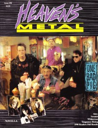

One Bad PigOn the cover
June 1991
Heaven's Metal | Media coverage:- 1985 in Cornerstone "Jesus In Your Face"
- 1987 in Heaven's Metal "Jerry Falwell's revenge, or Johnny Rotten's Nightmare", by Doug Van Pelt
- Mar 1988 in Heaven's Metal "Concert Review: One Bad Pig Thrashes Dallas"
- Apr 1988 in Heaven's Metal "Thrashing Against Sin With One Bad Pig", by Doug Van Pelt
- Feb 1989 in CCM "Mosh For The Master?", by Doug Van Pelt
- May 1989 in Notebored "One Bad Pig"
- Jul 1989 in Heaven's Metal "Concert Review: One Bad Pig", by Doug Van Pelt
- 1989 in Cornerstone "Interview: One Bad Pig"
- Win 1989 in Harvest Rock Syndicate "Everything But The Squeal", by Mark Eischer
- Feb 1990 in CCM "In Concert: Spurs Christian Concert Center, Oklahoma City, OK", by Doug Van Pelt
- Apr 1990 in Heaven's Metal "Metal Tracks: One Bad Pig"
- May 1990 in CCM "Toys in the Band: One Bad Pig"
- Jun 1990 in CCM "Feedback: One Bad Pig", by Paul Q-Pek
- Jun 1990 in Heaven's Metal "One Bad Pig", by Doug Van Pelt
- Jun 1990 in Heaven's Metal "Concert Review: One Bad Pig", by Doug Van Pelt
- Jun 1990 in Heaven's Metal "Concert Review: Exodus '90 Festival, San Antonio, TX", by Doug Van Pelt
- Jul 1990 in Notebored "One Bad Pig"
- Oct 1990 in CCM "Pearls From Swine", by Kathleen A Ervin
- Fall 1990 in Harvest Rock Syndicate "Wallowing In Music, Mayhem, & Ministry", by T. L. Faris
- Feb 1991 in Heaven's Metal "Concert Review: One Bad Pig", by Mike Boyd
- Jun 1991 in Heaven's Metal "Smashing, Flying, Screaming Pigs", by Spiny Norman
- Sep 1991 in Harvest Rock Syndicate "Pig Out!", by Brian Quincy Newcomb
- Jul 1992 in Notebored "One Bad Pig"
- Jul 1992 in Heaven's Metal "Working Hard To Have Fun", by David S. Hart
- Nov 1993 in Heaven's Metal "Concert Review: Metal Quest, Casper, WY", by Doug Van Pelt
- Sep 1994 in Heaven's Metal "Metal Tracks: One Bad Pig"
- Sep 2006 in HM "Classic Moments: One Bad Pig, Johnny Cash", by Doug Van Pelt
Albums & reviews:1992: Live / Blow The House Down
1992: Live / Blow The House Down [video]
1994: The Quintessential One Bad Pig, Vol. I
2000: Live at Cornerstone
Award Summary (Nominations / Wins)
Dove Awards1992 Dove Awards- Metal Album: I Scream Sunday
1995 Dove Awards- Metal Album: The Quintessential One Bad Pig, Vol. I
Books about One Bad Pig
- "One Bad Pig" in The Encyclopedia of Contemporary Christian Music (Mark Allan Powell, 2002).
|